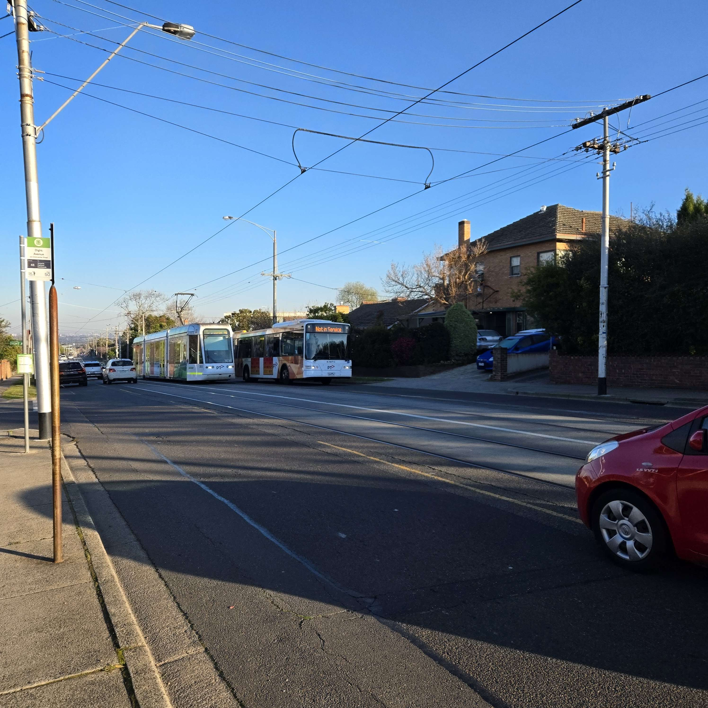

About my Area!

Welcome to the Area Page!
I currently live in the suburb: Balwyn, which is located around East Melbourne, it has many local parks and shops, with a Local Primary School and A High School right next door.
Why I live here:
I initially moved to Balwyn so that I could attend Balwyn High School, as you have to live in the area to attend. But this meant a new area and new cohort, filled with people I didn’t know. Fortunately, I met some great people and made some great friends along the way, which made my adjustment to living here pretty smooth.
Some places my friends and I would hang out at: Westfield Doncaster Melbourne Central Local Parks like Macleay Park, Hislop Park, or Greythorn Park. But now we mostly hang out online!
About the Picture
The image for this page is of a local tram line and bus line that I take often. I found the particular situation of the picture quite funny since the bus was trying to overtake the tram.